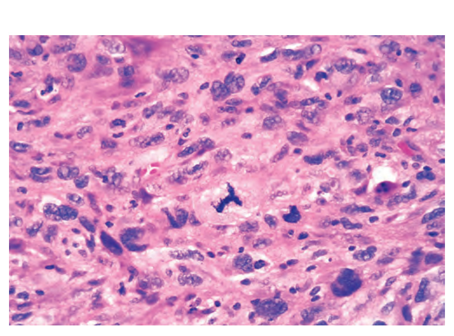

From cell to tumor
ศัพท์หลัก ลักษณะของเนื้องอก และความเปลี่ยนแปลงของเซลล์
จากความซับซ้อนของพยาธิวิทยา สู่บทสรุปที่เข้าใจได้ลึกขึ้น
ผลงานสรุป Robbins Basic Pathology ที่เชื่อมเนื้อหาวิชาการ ภาพประกอบ และการออกแบบตำราไว้ด้วยกัน ผ่านกระบวนการสรุปด้วย AI และ LangChain
PDF · 17 หน้า A4 · ฉบับสรุปพร้อมภาพประกอบ

เนื้องอกและมะเร็ง ตั้งแต่กลไกระดับโมเลกุล
ไปจนถึงการอ่านภาพและการจัดระยะโรค
ฉบับ 17 หน้า High-Yield Fluid Edition จัดลำดับเนื้อหาด้วย Fluid Editorial พร้อมภาพประกอบและสูตรการคำนวณที่จัดรูปแบบด้วย KaTeX เพื่อทบทวนประเด็นสำคัญอย่างต่อเนื่อง
Download the complete editionศัพท์หลัก ลักษณะของเนื้องอก และความเปลี่ยนแปลงของเซลล์
8 Hallmarks และ 2 enabling characteristics พร้อมกลไกระดับโมเลกุลและเส้นทางสัญญาณ
ภาพพยาธิวิทยาและแผนภาพประกอบ เชื่อมแนวคิดกับสิ่งที่เห็น
หลักการประเมินเกรดและระบบ TNM ในบริบทของบทเรียน
ชุดภาพประกอบ Neoplasia 15 ภาพ
เลือกภาพเพื่อเปิดดูขนาดใหญ่และรายละเอียด
ภาพมหพยาธิวิทยา จุลพยาธิวิทยา และแผนภาพระดับโมเลกุล 15 ภาพจากเล่มจริง เลข Figure อ้างอิงตามฉบับ PDF
สารบัญสรุปตำราพยาธิวิทยา
เลือกบทที่ต้องการเพื่อดาวน์โหลดฉบับ PDF
เซลล์ พันธุศาสตร์ และพื้นฐานพยาธิวิทยาของเซลล์
กลไกการบาดเจ็บ การตายแบบ Apoptosis/Necrosis และการปรับตัวของเซลล์
กระบวนการอักเสบเฉียบพลัน–เรื้อรัง และการซ่อมแซมเนื้อเยื่อ
ภาวะบวมน้ำ ลิ่มเลือดอุดตัน และภาวะช็อก
โรคทางพันธุกรรมและความผิดปกติในเด็ก · ฉบับสมบูรณ์ 11 หน้า พร้อม 14 ภาพ Micrograph
ภาวะภูมิคุ้มกันไวเกิน การแพ้ภูมิตัวเอง และภูมิคุ้มกันบกพร่อง · 8 หน้า
ฉบับ 17 หน้า High-Yield Fluid Edition พร้อมภาพประกอบ
พยาธิวิทยาหลอดเลือดและความดันโลหิตสูง
* เลขบทเป็นไปตามการจัดชุดสรุปนี้ โดย Neoplasia แยกเป็น Special Master Edition
มาตรฐานการจัดหน้าสำหรับชุดตำรา
ให้เนื้อหา ภาพ และจังหวะการอ่านทำงานร่วมกัน
จัดพิมพ์ HTML เป็นเอกสาร A4 ผ่าน Chromium Engine เพื่อควบคุมตัวอักษร ตาราง และภาพประกอบ
ออกแบบการแบ่งหน้าให้หัวข้ออยู่กับเนื้อหา ลดบรรทัดโดดเดี่ยว และรักษาความต่อเนื่องของบทเรียน
แนวทางสีสำหรับงานพิมพ์ทางการแพทย์ โดยรักษารายละเอียดภาพต้นฉบับบนเว็บ และตรวจสีตามอุปกรณ์ก่อนพิมพ์
PDF ฉบับ Neoplasia: 17 หน้า A4 · 15 ภาพประกอบ · ประมาณ 6.4 MB